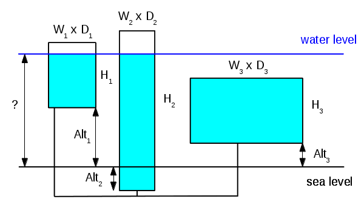

Úkolem je realizovat program, který umožní výpočet obsazení vodních nádrží.
Předpokládáme, že vodovodní společnost spravuje zásobníky na vodu. Každý zásobník má
tvar kvádru a je propojen vodovodním potrubím s ostatními zásobníky. Celkem je takto
propojeno mnoho zásobníků, víte, že jich je nejvýše 200000. Propojovací potrubí má
pro účely výpočtu nulový objem. Situace je znázorněna na obrázku:

Program dostane takto definovanou síť zásobníků. Následuje zadání objemu vody
obsaženého v zásobnících. Program určí nadmořskou výšku, do které bude sahat hladina vody.
Vstupem programu je počet zásobníků N (celé číslo). Pak následuje popis
jednotlivých zásobníků. Zásobník je popsán čtveřicí celých čísel Alt H W D,
kde Alt je nadmořská výška dna zásobníku, H je výška zásobníku,
W je šířka zásobníku a D je hloubka zásobníku. Všechny velikosti
jsou udané v metrech. Taková čtveřice je zadaná pro každý zásobník, na vstupu je tedy
N čtveřic. Po zadání zásobníků následuje sekvence dotazů. Na vstupu jsou celá
čísla udávající objem vody v zásobníku (v metrech kubických). Zadávání dotazů končí s koncem
vstupu (EOF).
Výstupem programu je nadmořská výška hladiny pro každý zadaný objem vody. Pokud je
objem nulový, je odpovědí "Prazdne", pokud se voda do zásobníků nevejde, je odpovědí
"Pretece". Formát odpovědí je zřejmý z ukázek níže.
Program musí kontrolovat správnost vstupních dat. Pokud je detekovaný nesprávný
vstup, program zobrazí chybové hlášení a ukončí se. Za chybu je považováno:
- počet zásobníků N nečíselný, záporný, nulový nebo větší než 200000,
- nečíselné zadání nadmořské výšky Alt,
- nečíselné, nulové nebo záporné rozměry zásobníku H, W nebo D,
- nečíselné nebo záporné zadání objemu uložené vody.
Váš program bude spouštěn v omezeném testovacím prostředí. Je omezen
dobou běhu (limit je vidět v logu referenčního řešení) a dále je omezena i
velikost dostupné paměti. Testovací prostředí dále zakazuje používat některé
"nebezpečné funkce" -- funkce pro spouštění programu, pro práci se sítí, ...
Pokud jsou tyto funkce použité, program se nespustí. Možná ve svém programu
používáte volání:
int main ( int argc, char * argv [] )
{
...
system ( "pause" ); /* aby se nezavrelo okno programu */
return 0;
}
Toto nebude v testovacím prostředí fungovat - je zakázáno spouštění jiného
programu. (I pokud by se program spustil, byl by odmítnut. Nebyl by
totiž nikdo, kdo by pauzu "odmáčkl", program by čekal věčně a překročil by
tak maximální dobu běhu.) Pokud tedy chcete zachovat pauzu pro testování na
Vašem počítači a zároveň chcete mít jistotu, že program poběží správně,
použijte následující trik:
int main ( int argc, char * argv [] )
{
...
#ifndef __PROGTEST__
system ( "pause" ); /* toto progtest "nevidi" */
#endif /* __PROGTEST__ */
return 0;
}
V závislosti na zvoleném algoritmu může být úloha výpočetně náročnější.
Správně implementovaný naivní algoritmus projde všemi povinnými testy, tedy
bude hodnocen nominálním výsledkem 100 %. Pokud se rozhodnete implementovat
algoritmus efektivnější, který pracuje rychle i pro větší objem vstupních dat,
můžete získat body navíc za bonusové testy. V bonusových testech jsou zadávané
velké počty zásobníků a velké počty dotazů.
Ukázka práce programu:
Zadejte pocet nadrzi:
5
Zadejte parametry nadrzi:
0 3 2 2
0 5 1 2
0 2 3 3
4 10 1 1
20 5 1 1
Zadejte objem vody:
0
Prazdne.
3
h = 0.200000
10
h = 0.666667
32
h = 2.333333
50
h = 14.000000
1000
Pretece.
53
h = 23.000000
Zadejte pocet nadrzi:
3
Zadejte parametry nadrzi:
-2 10 1 1
0 6 3 3
2 2 5 5
Zadejte objem vody:
1
h = -1.000000
2
h = 0.000000
3
h = 0.100000
22
h = 2.000000
23
h = 2.028571
95
h = 4.300000
112
h = 6.000000
113
h = 7.000000
114
h = 8.000000
115
Pretece.
Zadejte pocet nadrzi:
5
Zadejte parametry nadrzi:
0 5 1 1
0 5 2 2
2 3 3 3
2 5 4 4
2 5 5 5
Zadejte objem vody:
100
h = 3.636364
50
h = 2.727273
-30
Nespravny vstup.
Zadejte pocet nadrzi:
5
Zadejte parametry nadrzi:
0 5 1 abcd
Nespravny vstup.
|